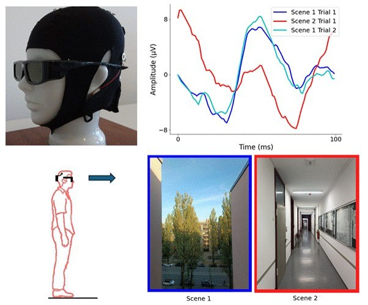

Research
Visual perception is not simply a passive image of the light reaching our eyes. What we see also depends on what we are trying to do, what we expect, and where we direct attention. We study how these influences are reflected in the brain.

Vision during movement
As we move through our surroundings, the visual scene changes continuously. The resulting pattern of visual motion, known as optic flow, provides information about our movement and the world around us. It also creates a complex and rapidly changing input to the visual system.
Our current SNF-funded programme investigates how attention, prediction, arousal and locomotion modulate perception and neural processing of these dynamic scenes. We use not only controlled stimuli to isolate aspects of the visual input, but also actual, real-world scenes to bear relevance to naturalistic perception.
In previous studies, we examined how spatial attention operates during visual-scene motion and whether initiating optic flow oneself changes neural and postural responses.
Examples:
- Elements of exogenous attentional cueing preserved during optokinetic motion of the visual scene (Mastropasqua, Vural & Taylor, European Journal of Neuroscience, 2022).
- Self-initiation Inhibits the Postural and Electrophysiological Responses to Optic Flow and Button Pressing (Obereisenbuchner, Dowsett & Taylor, Neuroscience, 2021).
Measuring and probing brain activity
Alongside these cognitive neuroscientific questions, we develop methods for measuring, decoding and perturbing human brain activity. These include multivariate analysis of EEG, machine learning, visual flicker and combined stimulation–recording approaches.
In a recent study, we used flickering LCD glasses and EEG to distinguish which real-world scene a participant was looking at. Reliable scene information was present in the shape of the evoked EEG waveform, even in the data from a single recording electrode and with less than a second of recording.
Example: Decoding real-world visual scenes from alpha and gamma band flicker evoked oscillations in human EEG (Dowsett, Martín Muñoz & Taylor, Scientific Reports, 2026).
We also use non-invasive brain stimulation, especially transcranial magnetic stimulation and transcranial current stimulation, to test the causal role of neural processes.
Developing experimental and analysis methods is important to us not only for our own research questions but also for their potential applications in other areas of cognitive neuroscience. We engage in collaborations with the clinical and neurotech sector.
Vision, attention and action
Seeing and acting are intimately entwined. The visual system has to identify the information relevant for current behaviour, and its processing can be affected by preparing or performing movements. We use behavioural and neural measures to investigate these interactions.
Our earlier studies used techniques including TMS, EEG and fMRI to examine the contribution of frontal, parietal and visual cortical systems to attention and action selection.
Example: Subsecond changes in top-down control during conflict and action selection (Taylor, Nobre & Rushworth, Journal of Neuroscience, 2007).